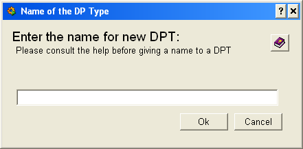

| Panel Name |
fwDipInputDialog.pnl |
|
| Introduction |
This panel is used in fwDIP to collect various data from user. This help concerns the creation of the DataPoint Types. | |
| Instructions |
The naming scheme in DIP shall follow the following pattern:
Domain/[SubDomain]/[SubSubDomain1]/[SubSubDomainx]/Item
e.g. ATLAS/Muon/EndCap/Rack/Rack53/Temperature
In most cases there are many publications that have identical structure. In above case, probably all the Temperature publications for all the Racks (and even maybe all the racks in the subsystem) will have the same structure. Thus it is important to choose a good name for a PVSS DataPoint Type - that would be general (and not too general). Here are some examples:
|
|
| Restrictions | ||
|

|
| Dollar Parameters | ||
| Name | Description | |
| $sText | Panel heading | |
| $sText2 | Text below the panel heading | optional |
| $sInitialText | Initial text that is displayed in the textfield | optional |
| $bShowHelp | Whether to display the help icon (pointing to this document) | optional |